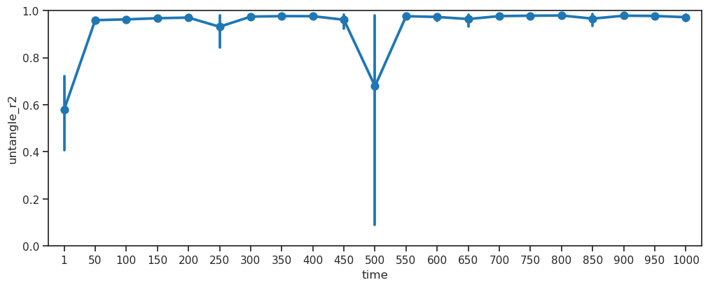
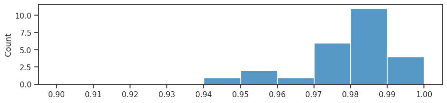
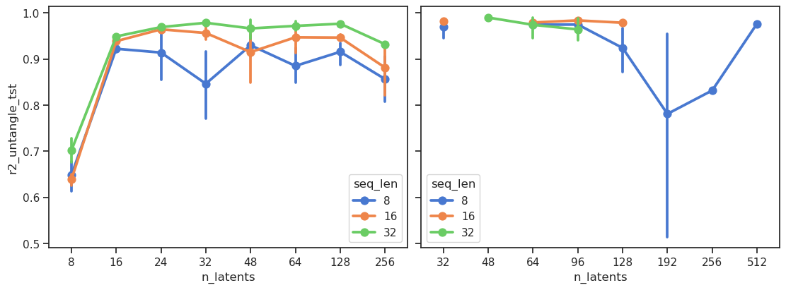

Fig: balls#
project = iP-VAE, host = any, device = any
Motivation:
# HIDE CODE
import os, sys
from IPython.display import display
# tmp & extras dir
git_dir = os.path.join(os.environ['HOME'], 'Dropbox/git')
extras_dir = os.path.join(git_dir, 'jb-progress-2025/_extras')
fig_base_dir = os.path.join(git_dir, 'jb-progress-2025/figs')
tmp_dir = os.path.join(git_dir, 'jb-progress-2025/tmp')
# GitHub
sys.path.insert(0, os.path.join(git_dir, '_IterativeVAE'))
from figures.convergence import plot_convergence
from figures.imgs import plot_weights
from figures.fighelper import *
from main.train import *
# warnings, tqdm, & style
warnings.filterwarnings('ignore', category=DeprecationWarning)
warnings.filterwarnings('ignore', category=FutureWarning)
warnings.filterwarnings('ignore', category=UserWarning)
from rich.jupyter import print
%matplotlib inline
set_style()
device_idx = 0
device = f'cuda:{device_idx}'
print(f"device: {device} ——— host: {os.uname().nodename}")
device: cuda:0 ——— host: mach
Results & Figs dir#
pal_models = get_palette_models()
results_dir = pjoin(tmp_dir, 'results_2025-03')
figs_dir = pjoin(fig_base_dir, 'results_2025-03')
os.makedirs(results_dir, exist_ok=True)
os.makedirs(figs_dir, exist_ok=True)
len(os.listdir(results_dir)), len(os.listdir(figs_dir))
(624, 0)
BALLS dataset#
files = [f for f in os.listdir(results_dir) if 'BALLS' in f]
files = sorted(files, key=alphanum_sort_key)
len(files)
225
results_dir = pjoin(tmp_dir, 'results_2025-04')
files = [
f for f in os.listdir(results_dir)
if 'BALLS64' in f
# if 'BALLS64_t-32_b-96_k-[96]' in f
]
files = sorted(files, key=alphanum_sort_key)
# print(files)
len(files)
124
info_keys = [
'dataset', 'type', 'latent_act', 'str_model', 'n_params',
't_train', 'beta_outer', 'n_latents', 'lr', 'clamp_u', 'seed', 'timestamp',
]
df_oos = collections.defaultdict(list)
for f in tqdm(files):
is_amortized = 'amort' in f
try:
load = np.load(
pjoin(results_dir, f),
allow_pickle=True,
).item()
except EOFError:
print(f"EOFError:\n{f}")
continue
info, results = load['info'], load['results']
if isinstance(info['n_latents'], list):
info['n_latents'] = info['n_latents'][0]
input_size = dataset_dims(info['dataset'])
total_dims = np.prod(input_size)
for split in ['vld', 'tst']:
for t_idx, t in enumerate(list(results['r2_zg']['trn'])):
# info
for k in info_keys:
df_oos[k].append(info.get(k, None))
df_oos['amort'].append(is_amortized)
# results
vals = {
'split': split,
'time': t,
'untangle_r2': results['r2_zg'][split][t].mean(),
'untangle_r2_a': results['r2_zg'][split][t][0],
'untangle_r2_b': results['r2_zg'][split][t][1],
'untangle_corr': results['corr_zg'][split][t].mean(),
'untangle_corr_a': results['corr_zg'][split][t][0],
'untangle_corr_b': results['corr_zg'][split][t][1],
'recon_r2': results['results_xtract'][split]['r2'][t - 1],
'recon_mse': results['results_xtract'][split]['mse'][t - 1],
'recon_mse_perdim': results['results_xtract'][split]['mse'][t - 1] / total_dims * 1e3,
'%-zeros': np.mean(results['results_xtract'][split]['samples'][:, t_idx, :] == 0.0),
}
for k, v in vals.items():
df_oos[k].append(v)
df_oos = pd.DataFrame(df_oos)
df_oos.shape
100%|█████████████████████████████████████████| 124/124 [02:40<00:00, 1.29s/it]
(5208, 25)
df_oos_pois = df_oos.loc[
(df_oos['str_model'] == 'poisson') &
(df_oos['split'] == 'tst') &
(df_oos['time'] == 1000) &
(df_oos['untangle_r2'] > 0.1)
]
df_oos_pois = df_oos_pois.drop(columns=[
'dataset', 'type', 'latent_act',
'str_model', 'n_params', 'amort',
])
df_oos_pois = df_oos_pois.sort_values(by='untangle_r2', ascending=False)
df_oos_pois.shape
(49, 19)
df_oos_pois
| t_train | beta_outer | n_latents | lr | clamp_u | seed | timestamp | split | time | untangle_r2 | untangle_r2_a | untangle_r2_b | untangle_corr | untangle_corr_a | untangle_corr_b | recon_r2 | recon_mse | recon_mse_perdim | %-zeros | |
|---|---|---|---|---|---|---|---|---|---|---|---|---|---|---|---|---|---|---|---|
| 3905 | 32.0 | 96.0 | 96 | 0.0005 | 10.0 | 103 | 2025_04_28,09:10 | tst | 1000 | 0.991616 | 0.992047 | 0.991184 | 0.996061 | 0.996030 | 0.996092 | 0.991991 | 1.825771 | 0.445745 | 0.785185 |
| 4115 | 32.0 | 96.0 | 96 | 0.0005 | 10.0 | 108 | 2025_04_27,18:27 | tst | 1000 | 0.991320 | 0.991668 | 0.990971 | 0.995813 | 0.995907 | 0.995720 | 0.991584 | 1.917611 | 0.468167 | 0.773591 |
| 3485 | 32.0 | 96.0 | 96 | 0.0005 | 10.0 | 77 | 2025_04_28,02:07 | tst | 1000 | 0.991096 | 0.991406 | 0.990787 | 0.995610 | 0.995829 | 0.995391 | 0.991261 | 1.992770 | 0.486516 | 0.786497 |
| 4283 | 32.0 | 96.0 | 96 | 0.0005 | 10.0 | 113 | 2025_04_28,23:47 | tst | 1000 | 0.991080 | 0.991008 | 0.991152 | 0.995710 | 0.995732 | 0.995688 | 0.991173 | 2.012267 | 0.491276 | 0.757927 |
| 3359 | 32.0 | 96.0 | 96 | 0.0005 | 10.0 | 74 | 2025_04_27,18:19 | tst | 1000 | 0.990750 | 0.990117 | 0.991383 | 0.995865 | 0.995674 | 0.996056 | 0.991645 | 1.904577 | 0.464985 | 0.762169 |
| 4073 | 32.0 | 96.0 | 96 | 0.0005 | 10.0 | 107 | 2025_04_29,14:26 | tst | 1000 | 0.989536 | 0.990835 | 0.988237 | 0.995726 | 0.995693 | 0.995758 | 0.991436 | 1.952691 | 0.476731 | 0.772021 |
| 3947 | 32.0 | 96.0 | 96 | 0.0005 | 10.0 | 104 | 2025_04_29,00:09 | tst | 1000 | 0.989509 | 0.987825 | 0.991193 | 0.995194 | 0.994491 | 0.995897 | 0.991482 | 1.940762 | 0.473819 | 0.778698 |
| 3275 | 32.0 | 96.0 | 96 | 0.0005 | 10.0 | 72 | 2025_04_27,18:19 | tst | 1000 | 0.989492 | 0.987173 | 0.991810 | 0.995335 | 0.994658 | 0.996011 | 0.991786 | 1.872220 | 0.457085 | 0.765830 |
| 3527 | 32.0 | 96.0 | 96 | 0.0005 | 10.0 | 78 | 2025_04_28,09:56 | tst | 1000 | 0.989374 | 0.990980 | 0.987767 | 0.995737 | 0.995864 | 0.995610 | 0.992034 | 1.815882 | 0.443331 | 0.790828 |
| 4241 | 32.0 | 96.0 | 96 | 0.0005 | 10.0 | 112 | 2025_04_28,10:48 | tst | 1000 | 0.989012 | 0.991051 | 0.986974 | 0.995690 | 0.995804 | 0.995575 | 0.991696 | 1.891542 | 0.461802 | 0.771126 |
| 3821 | 32.0 | 96.0 | 96 | 0.0005 | 10.0 | 101 | 2025_04_27,18:27 | tst | 1000 | 0.988942 | 0.986545 | 0.991339 | 0.994651 | 0.993591 | 0.995711 | 0.991410 | 1.956238 | 0.477597 | 0.768917 |
| 3317 | 32.0 | 96.0 | 96 | 0.0005 | 10.0 | 73 | 2025_04_27,18:19 | tst | 1000 | 0.988882 | 0.991109 | 0.986655 | 0.995264 | 0.995606 | 0.994922 | 0.991619 | 1.908841 | 0.466026 | 0.757526 |
| 4157 | 32.0 | 96.0 | 96 | 0.0005 | 10.0 | 109 | 2025_04_27,18:27 | tst | 1000 | 0.988853 | 0.987304 | 0.990402 | 0.995354 | 0.995481 | 0.995228 | 0.991266 | 1.989984 | 0.485836 | 0.754318 |
| 3569 | 32.0 | 96.0 | 96 | 0.0005 | 10.0 | 79 | 2025_04_28,09:45 | tst | 1000 | 0.988678 | 0.985542 | 0.991814 | 0.995284 | 0.994511 | 0.996057 | 0.991416 | 1.956109 | 0.477566 | 0.766289 |
| 2939 | 32.0 | 96.0 | 96 | 0.0005 | 10.0 | 64 | 2025_04_28,02:08 | tst | 1000 | 0.988635 | 0.987654 | 0.989616 | 0.995240 | 0.994828 | 0.995652 | 0.991291 | 1.983973 | 0.484368 | 0.756979 |
| 4199 | 32.0 | 96.0 | 96 | 0.0005 | 10.0 | 111 | 2025_04_28,09:10 | tst | 1000 | 0.988570 | 0.986196 | 0.990944 | 0.995575 | 0.995507 | 0.995643 | 0.991513 | 1.934404 | 0.472267 | 0.781765 |
| 4871 | 32.0 | 192.0 | 96 | 0.0005 | 10.0 | 11 | 2025_04_25,21:56 | tst | 1000 | 0.987789 | 0.989251 | 0.986328 | 0.995335 | 0.995281 | 0.995389 | 0.987653 | 2.816425 | 0.687604 | 0.810353 |
| 4661 | 32.0 | 128.0 | 96 | 0.0005 | 10.0 | 13 | 2025_04_17,23:04 | tst | 1000 | 0.987351 | 0.987473 | 0.987228 | 0.994228 | 0.994662 | 0.993795 | 0.990198 | 2.235198 | 0.545703 | 0.756561 |
| 3401 | 32.0 | 96.0 | 96 | 0.0005 | 10.0 | 75 | 2025_04_28,02:02 | tst | 1000 | 0.987333 | 0.990971 | 0.983696 | 0.994823 | 0.995693 | 0.993954 | 0.990971 | 2.056120 | 0.501983 | 0.770713 |
| 2897 | 32.0 | 96.0 | 96 | 0.0005 | 10.0 | 63 | 2025_04_28,02:08 | tst | 1000 | 0.986898 | 0.983611 | 0.990185 | 0.994353 | 0.992790 | 0.995916 | 0.991471 | 1.943806 | 0.474562 | 0.746078 |
| 3653 | 32.0 | 96.0 | 96 | 0.0005 | 10.0 | 81 | 2025_04_28,17:44 | tst | 1000 | 0.984541 | 0.980566 | 0.988515 | 0.993300 | 0.991821 | 0.994778 | 0.991726 | 1.883854 | 0.459925 | 0.750359 |
| 3107 | 32.0 | 96.0 | 96 | 0.0005 | 10.0 | 68 | 2025_04_28,10:04 | tst | 1000 | 0.984216 | 0.989460 | 0.978971 | 0.995646 | 0.995872 | 0.995420 | 0.991560 | 1.924069 | 0.469743 | 0.759741 |
| 1805 | 16.0 | 24.0 | 96 | 0.0005 | 10.0 | 401 | 2025_04_29,23:11 | tst | 1000 | 0.983785 | 0.981626 | 0.985945 | 0.992887 | 0.992553 | 0.993222 | 0.989644 | 2.357203 | 0.575489 | 0.788576 |
| 4619 | 32.0 | 128.0 | 96 | 0.0005 | 10.0 | 12 | 2025_04_18,00:40 | tst | 1000 | 0.983624 | 0.979850 | 0.987399 | 0.995182 | 0.994823 | 0.995542 | 0.990010 | 2.274962 | 0.555411 | 0.766513 |
| 4031 | 32.0 | 96.0 | 96 | 0.0005 | 10.0 | 106 | 2025_04_29,14:59 | tst | 1000 | 0.982298 | 0.985383 | 0.979213 | 0.993002 | 0.993910 | 0.992095 | 0.991742 | 1.881457 | 0.459340 | 0.781031 |
| 3611 | 32.0 | 96.0 | 96 | 0.0005 | 10.0 | 80 | 2025_04_28,09:59 | tst | 1000 | 0.979340 | 0.985921 | 0.972760 | 0.995056 | 0.995113 | 0.995000 | 0.991377 | 1.963488 | 0.479367 | 0.740694 |
| 4997 | 32.0 | 192.0 | 96 | 0.0005 | 10.0 | 14 | 2025_04_25,21:56 | tst | 1000 | 0.978997 | 0.979720 | 0.978274 | 0.994676 | 0.994756 | 0.994597 | 0.987755 | 2.794499 | 0.682251 | 0.806012 |
| 4787 | 32.0 | 128.0 | 96 | 0.0005 | 10.0 | 140 | 2025_04_18,18:49 | tst | 1000 | 0.977836 | 0.970555 | 0.985117 | 0.991232 | 0.989924 | 0.992539 | 0.990076 | 2.260322 | 0.551836 | 0.793959 |
| 4493 | 32.0 | 96.0 | 128 | 0.0005 | 10.0 | 10 | 2025_04_27,10:53 | tst | 1000 | 0.977282 | 0.967330 | 0.987235 | 0.994308 | 0.993665 | 0.994951 | 0.992184 | 1.781940 | 0.435044 | 0.812554 |
| 3233 | 32.0 | 96.0 | 96 | 0.0005 | 10.0 | 71 | 2025_04_28,17:52 | tst | 1000 | 0.976343 | 0.975821 | 0.976865 | 0.995221 | 0.995220 | 0.995222 | 0.991361 | 1.968676 | 0.480634 | 0.772083 |
| 3065 | 32.0 | 96.0 | 96 | 0.0005 | 10.0 | 67 | 2025_04_28,09:47 | tst | 1000 | 0.975996 | 0.963897 | 0.988095 | 0.988541 | 0.982687 | 0.994396 | 0.991891 | 1.849186 | 0.451461 | 0.774859 |
| 3023 | 32.0 | 96.0 | 96 | 0.0005 | 10.0 | 66 | 2025_04_28,09:47 | tst | 1000 | 0.975835 | 0.974217 | 0.977453 | 0.993725 | 0.993703 | 0.993746 | 0.991214 | 2.003037 | 0.489023 | 0.776857 |
| 3863 | 32.0 | 96.0 | 96 | 0.0005 | 10.0 | 102 | 2025_04_28,09:12 | tst | 1000 | 0.974866 | 0.969068 | 0.980664 | 0.989483 | 0.986649 | 0.992318 | 0.991684 | 1.895897 | 0.462865 | 0.762319 |
| 3989 | 32.0 | 96.0 | 96 | 0.0005 | 10.0 | 105 | 2025_04_28,23:47 | tst | 1000 | 0.973834 | 0.988615 | 0.959054 | 0.992982 | 0.994412 | 0.991552 | 0.990995 | 2.053176 | 0.501264 | 0.764526 |
| 2267 | 16.0 | 24.0 | 128 | 0.0005 | 10.0 | 400 | 2025_04_29,23:11 | tst | 1000 | 0.973018 | 0.967755 | 0.978281 | 0.987272 | 0.985011 | 0.989534 | 0.990919 | 2.068567 | 0.505021 | 0.831291 |
| 3737 | 32.0 | 96.0 | 96 | 0.0005 | 10.0 | 83 | 2025_04_28,17:34 | tst | 1000 | 0.971405 | 0.972112 | 0.970698 | 0.990919 | 0.990522 | 0.991317 | 0.991581 | 1.918897 | 0.468481 | 0.745064 |
| 3695 | 32.0 | 96.0 | 96 | 0.0005 | 10.0 | 82 | 2025_04_28,17:30 | tst | 1000 | 0.971319 | 0.984895 | 0.957743 | 0.987452 | 0.993225 | 0.981679 | 0.991339 | 1.974218 | 0.481987 | 0.757201 |
| 2981 | 32.0 | 96.0 | 96 | 0.0005 | 10.0 | 65 | 2025_04_28,02:12 | tst | 1000 | 0.969984 | 0.978239 | 0.961729 | 0.993602 | 0.994633 | 0.992572 | 0.991293 | 1.983289 | 0.484202 | 0.779386 |
| 4955 | 32.0 | 192.0 | 96 | 0.0005 | 10.0 | 13 | 2025_04_25,21:56 | tst | 1000 | 0.960047 | 0.958087 | 0.962008 | 0.992630 | 0.992804 | 0.992455 | 0.987220 | 2.921285 | 0.713204 | 0.798207 |
| 4829 | 32.0 | 192.0 | 96 | 0.0005 | 10.0 | 10 | 2025_04_25,21:56 | tst | 1000 | 0.955806 | 0.982312 | 0.929300 | 0.991638 | 0.994780 | 0.988497 | 0.987697 | 2.802896 | 0.684301 | 0.775012 |
| 3149 | 32.0 | 96.0 | 96 | 0.0005 | 10.0 | 69 | 2025_04_28,17:21 | tst | 1000 | 0.951943 | 0.932432 | 0.971453 | 0.986852 | 0.981701 | 0.992003 | 0.991700 | 1.890968 | 0.461662 | 0.758991 |
| 3443 | 32.0 | 96.0 | 96 | 0.0005 | 10.0 | 76 | 2025_04_28,01:56 | tst | 1000 | 0.951860 | 0.946670 | 0.957050 | 0.988882 | 0.988570 | 0.989193 | 0.991146 | 2.017748 | 0.492614 | 0.763872 |
| 4913 | 32.0 | 192.0 | 96 | 0.0005 | 10.0 | 12 | 2025_04_26,04:49 | tst | 1000 | 0.949893 | 0.964665 | 0.935121 | 0.993503 | 0.993707 | 0.993299 | 0.986019 | 3.189610 | 0.778713 | 0.787933 |
| 2771 | 32.0 | 96.0 | 96 | 0.0005 | 10.0 | 60 | 2025_04_27,18:19 | tst | 1000 | 0.944486 | 0.971017 | 0.917955 | 0.980108 | 0.991160 | 0.969055 | 0.991766 | 1.876491 | 0.458128 | 0.769553 |
| 2729 | 32.0 | 96.0 | 96 | 0.0005 | 6.0 | 502 | 2025_04_30,17:41 | tst | 1000 | 0.888146 | 0.958504 | 0.817788 | 0.979672 | 0.979988 | 0.979355 | 0.976443 | 5.372096 | 1.311547 | 0.632191 |
| 2309 | 16.0 | 24.0 | 128 | 0.0005 | 10.0 | 401 | 2025_04_29,23:11 | tst | 1000 | 0.857973 | 0.814571 | 0.901375 | 0.940601 | 0.927316 | 0.953885 | 0.990920 | 2.072356 | 0.505946 | 0.828340 |
| 2099 | 16.0 | 24.0 | 128 | 0.0005 | 6.0 | 500 | 2025_04_30,17:42 | tst | 1000 | 0.843352 | 0.837871 | 0.848833 | 0.971866 | 0.969986 | 0.973745 | 0.984713 | 3.484542 | 0.850718 | 0.560718 |
| 2855 | 32.0 | 96.0 | 96 | 0.0005 | 10.0 | 62 | 2025_04_27,18:19 | tst | 1000 | 0.768043 | 0.625576 | 0.910510 | 0.912310 | 0.865689 | 0.958930 | 0.991398 | 1.960238 | 0.478574 | 0.783284 |
| 1973 | 16.0 | 24.0 | 128 | 0.0001 | 10.0 | 402 | 2025_04_29,23:11 | tst | 1000 | 0.577127 | 0.830021 | 0.324234 | 0.891906 | 0.928970 | 0.854842 | 0.968322 | 7.226454 | 1.764271 | 0.839398 |
df_oos_gaus = df_oos.loc[
(df_oos['str_model'] == 'gaussian') &
(df_oos['split'] == 'tst') &
(df_oos['time'] == 1000) &
(df_oos['untangle_r2'] > 0.1)
]
df_oos_gaus = df_oos_gaus.drop(columns=[
'dataset', 'type', 'latent_act',
'str_model', 'n_params', 'amort',
])
df_oos_gaus = df_oos_gaus.sort_values(by='untangle_r2', ascending=False)
df_oos_gaus.shape
(19, 19)
df_oos_gaus
| t_train | beta_outer | n_latents | lr | clamp_u | seed | timestamp | split | time | untangle_r2 | untangle_r2_a | untangle_r2_b | untangle_corr | untangle_corr_a | untangle_corr_b | recon_r2 | recon_mse | recon_mse_perdim | %-zeros | |
|---|---|---|---|---|---|---|---|---|---|---|---|---|---|---|---|---|---|---|---|
| 1217 | 32.0 | 8.0 | 96 | 0.0005 | [7.0, 2.0] | 13 | 2025_05_01,05:39 | tst | 1000 | 0.982245 | 0.982010 | 0.982479 | 0.991359 | 0.991409 | 0.991310 | 0.981404 | 4.241330 | 1.035481 | 0.0 |
| 1385 | 32.0 | 8.0 | 96 | 0.0005 | [7.0, 2.0] | 11 | 2025_05_01,00:04 | tst | 1000 | 0.980193 | 0.979782 | 0.980603 | 0.990978 | 0.990686 | 0.991270 | 0.980574 | 4.428319 | 1.081133 | 0.0 |
| 1343 | 32.0 | 8.0 | 96 | 0.0005 | [7.0, 2.0] | 10 | 2025_05_01,00:04 | tst | 1000 | 0.978141 | 0.979376 | 0.976906 | 0.990634 | 0.990343 | 0.990925 | 0.979820 | 4.592588 | 1.121237 | 0.0 |
| 1259 | 32.0 | 8.0 | 96 | 0.0005 | [7.0, 2.0] | 14 | 2025_05_01,00:07 | tst | 1000 | 0.978120 | 0.978049 | 0.978190 | 0.989843 | 0.990090 | 0.989596 | 0.978345 | 4.934747 | 1.204772 | 0.0 |
| 1301 | 32.0 | 8.0 | 96 | 0.0005 | [7.0, 2.0] | 15 | 2025_05_01,05:40 | tst | 1000 | 0.977918 | 0.980477 | 0.975359 | 0.990767 | 0.990829 | 0.990705 | 0.980762 | 4.385174 | 1.070599 | 0.0 |
| 1091 | 32.0 | 1.0 | 96 | 0.0005 | [7.0, 2.0] | 18 | 2025_05_01,11:46 | tst | 1000 | 0.973513 | 0.973457 | 0.973568 | 0.986978 | 0.986897 | 0.987059 | 0.982500 | 3.984327 | 0.972736 | 0.0 |
| 923 | 32.0 | 1.0 | 96 | 0.0005 | [7.0, 2.0] | 13 | 2025_05_01,11:46 | tst | 1000 | 0.972434 | 0.971401 | 0.973467 | 0.987290 | 0.987399 | 0.987180 | 0.981657 | 4.185799 | 1.021923 | 0.0 |
| 1133 | 32.0 | 1.0 | 96 | 0.0005 | [7.0, 2.0] | 19 | 2025_05_01,11:46 | tst | 1000 | 0.972320 | 0.972429 | 0.972210 | 0.986740 | 0.986237 | 0.987243 | 0.980537 | 4.441170 | 1.084270 | 0.0 |
| 1175 | 32.0 | 8.0 | 96 | 0.0005 | [7.0, 2.0] | 12 | 2025_05_01,00:07 | tst | 1000 | 0.971241 | 0.970546 | 0.971935 | 0.989256 | 0.988973 | 0.989540 | 0.979782 | 4.602654 | 1.123695 | 0.0 |
| 881 | 32.0 | 1.0 | 96 | 0.0005 | [7.0, 2.0] | 11 | 2025_05_01,11:46 | tst | 1000 | 0.969512 | 0.965965 | 0.973060 | 0.986233 | 0.985499 | 0.986967 | 0.981723 | 4.161704 | 1.016041 | 0.0 |
| 839 | 32.0 | 1.0 | 96 | 0.0005 | [7.0, 2.0] | 10 | 2025_05_01,11:46 | tst | 1000 | 0.969141 | 0.965733 | 0.972549 | 0.987268 | 0.986812 | 0.987724 | 0.981031 | 4.326562 | 1.056290 | 0.0 |
| 1049 | 32.0 | 1.0 | 96 | 0.0005 | [7.0, 2.0] | 17 | 2025_05_01,11:46 | tst | 1000 | 0.957518 | 0.949991 | 0.965046 | 0.984538 | 0.982756 | 0.986320 | 0.980328 | 4.476352 | 1.092859 | 0.0 |
| 1511 | NaN | NaN | 96 | 0.0005 | None | 12 | 2025_04_18,06:05 | tst | 1000 | 0.955712 | 0.936183 | 0.975241 | 0.986003 | 0.983170 | 0.988836 | 0.964663 | 8.050717 | 1.965507 | 0.0 |
| 1595 | NaN | NaN | 96 | 0.0005 | None | 14 | 2025_04_17,23:05 | tst | 1000 | 0.948588 | 0.946680 | 0.950496 | 0.987140 | 0.988260 | 0.986019 | 0.964915 | 7.998083 | 1.952657 | 0.0 |
| 965 | 32.0 | 1.0 | 96 | 0.0005 | [7.0, 2.0] | 14 | 2025_05_01,11:46 | tst | 1000 | 0.948396 | 0.925320 | 0.971472 | 0.984954 | 0.984107 | 0.985800 | 0.978478 | 4.906766 | 1.197941 | 0.0 |
| 1007 | 32.0 | 1.0 | 96 | 0.0005 | [7.0, 2.0] | 15 | 2025_05_01,11:46 | tst | 1000 | 0.946613 | 0.921120 | 0.972106 | 0.983134 | 0.979145 | 0.987122 | 0.978687 | 4.854731 | 1.185237 | 0.0 |
| 1427 | NaN | NaN | 96 | 0.0005 | None | 10 | 2025_04_17,23:05 | tst | 1000 | 0.918821 | 0.904071 | 0.933571 | 0.985097 | 0.983481 | 0.986712 | 0.963791 | 8.254896 | 2.015356 | 0.0 |
| 1469 | NaN | NaN | 96 | 0.0005 | None | 11 | 2025_04_17,23:05 | tst | 1000 | 0.917683 | 0.944913 | 0.890454 | 0.983764 | 0.983459 | 0.984070 | 0.959312 | 9.272847 | 2.263879 | 0.0 |
| 1553 | NaN | NaN | 96 | 0.0005 | None | 13 | 2025_04_17,23:05 | tst | 1000 | 0.912659 | 0.937787 | 0.887531 | 0.986114 | 0.987345 | 0.984883 | 0.963620 | 8.296731 | 2.025569 | 0.0 |
df_oos_gausrelu = df_oos.loc[
(df_oos['str_model'] == 'gaussian+relu') &
(df_oos['split'] == 'tst') &
(df_oos['time'] == 1000) # &
# (df_oos['untangle_r2'] > 0.1)
]
df_oos_gausrelu = df_oos_gausrelu.drop(columns=[
'dataset', 'type', 'latent_act',
'str_model', 'n_params', 'amort',
])
df_oos_gausrelu = df_oos_gausrelu.sort_values(
by='untangle_r2', ascending=False)
df_oos_gausrelu.shape
(19, 19)
df_oos_gausrelu
| t_train | beta_outer | n_latents | lr | clamp_u | seed | timestamp | split | time | untangle_r2 | untangle_r2_a | untangle_r2_b | untangle_corr | untangle_corr_a | untangle_corr_b | recon_r2 | recon_mse | recon_mse_perdim | %-zeros | |
|---|---|---|---|---|---|---|---|---|---|---|---|---|---|---|---|---|---|---|---|
| 125 | 8.0 | 1.0 | 96 | 0.0005 | [7.0, 2.0] | 0 | 2025_05_01,13:08 | tst | 1000 | 0.840283 | 0.831613 | 0.848952 | 0.957133 | 0.954415 | 0.959850 | 0.858058 | 32.346119 | 7.897002 | 0.676780 |
| 167 | 8.0 | 1.0 | 96 | 0.0005 | [7.0, 2.0] | 1 | 2025_05_01,13:08 | tst | 1000 | 0.819983 | 0.804429 | 0.835537 | 0.954596 | 0.952548 | 0.956644 | 0.862406 | 31.354355 | 7.654872 | 0.677198 |
| 41 | 4.0 | 1.0 | 96 | 0.0005 | [7.0, 2.0] | 0 | 2025_05_01,13:08 | tst | 1000 | 0.635848 | 0.648067 | 0.623629 | 0.861260 | 0.868291 | 0.854229 | 0.886022 | 26.010532 | 6.350228 | 0.750254 |
| 83 | 4.0 | 1.0 | 96 | 0.0005 | [7.0, 2.0] | 1 | 2025_05_01,13:08 | tst | 1000 | 0.385051 | 0.427782 | 0.342320 | 0.832557 | 0.809162 | 0.855951 | 0.888427 | 25.469894 | 6.218236 | 0.747758 |
| 713 | NaN | NaN | 96 | 0.0005 | None | 12 | 2025_04_18,06:24 | tst | 1000 | -0.042514 | -0.091498 | 0.006471 | 0.650359 | 0.648431 | 0.652287 | 0.482643 | 117.776329 | 28.753987 | 0.853752 |
| 797 | NaN | NaN | 96 | 0.0005 | None | 14 | 2025_04_17,23:05 | tst | 1000 | -0.286315 | -0.065749 | -0.506880 | 0.619520 | 0.591421 | 0.647619 | 0.326179 | 153.292786 | 37.424996 | 0.881101 |
| 629 | NaN | NaN | 96 | 0.0005 | None | 10 | 2025_04_17,23:05 | tst | 1000 | -0.328561 | -0.115059 | -0.542063 | 0.647127 | 0.754948 | 0.539307 | 0.490262 | 115.912872 | 28.299041 | 0.850127 |
| 755 | NaN | NaN | 96 | 0.0005 | None | 13 | 2025_04_17,23:05 | tst | 1000 | -0.564580 | -0.168055 | -0.961106 | 0.654489 | 0.700963 | 0.608015 | 0.222785 | 177.550934 | 43.347396 | 0.885281 |
| 671 | NaN | NaN | 96 | 0.0005 | None | 11 | 2025_04_17,23:05 | tst | 1000 | -0.649567 | -0.260414 | -1.038719 | 0.514032 | 0.559126 | 0.468938 | 0.279448 | 164.176865 | 40.082242 | 0.884819 |
| 251 | 16.0 | 1.0 | 96 | 0.0005 | [7.0, 2.0] | 1 | 2025_05_01,13:08 | tst | 1000 | -4.423757 | -4.295012 | -4.552501 | 0.220445 | 0.231394 | 0.209496 | 0.066921 | 213.457520 | 52.113652 | 0.973540 |
| 419 | 32.0 | 8.0 | 96 | 0.0005 | [7.0, 2.0] | 13 | 2025_05_01,06:06 | tst | 1000 | -4.441239 | -4.767300 | -4.115178 | 0.228458 | 0.300045 | 0.156871 | -0.044589 | 239.088181 | 58.371138 | 0.977971 |
| 461 | 32.0 | 8.0 | 96 | 0.0005 | [7.0, 2.0] | 14 | 2025_05_01,00:07 | tst | 1000 | -4.473975 | -4.188724 | -4.759227 | 0.173716 | 0.266831 | 0.080601 | -0.055647 | 241.602493 | 58.984984 | 0.978045 |
| 293 | 32.0 | 1.0 | 96 | 0.0005 | [7.0, 2.0] | 0 | 2025_05_01,17:10 | tst | 1000 | -4.476022 | -4.841416 | -4.110629 | 0.213793 | 0.162672 | 0.264915 | -0.053530 | 241.033478 | 58.846064 | 0.978921 |
| 587 | 32.0 | 8.0 | 96 | 0.0005 | [7.0, 2.0] | 11 | 2025_05_01,00:04 | tst | 1000 | -4.479419 | -4.771321 | -4.187517 | 0.201738 | 0.121229 | 0.282246 | -0.037248 | 237.351974 | 57.947259 | 0.977391 |
| 209 | 16.0 | 1.0 | 96 | 0.0005 | [7.0, 2.0] | 0 | 2025_05_01,13:08 | tst | 1000 | -4.494904 | -4.473122 | -4.516685 | 0.241363 | 0.268041 | 0.214685 | 0.039590 | 219.550507 | 53.601198 | 0.975795 |
| 335 | 32.0 | 1.0 | 96 | 0.0005 | [7.0, 2.0] | 1 | 2025_05_01,17:10 | tst | 1000 | -4.616737 | -4.649509 | -4.583964 | 0.188671 | 0.194436 | 0.182906 | -0.039404 | 237.844315 | 58.067460 | 0.978549 |
| 545 | 32.0 | 8.0 | 96 | 0.0005 | [7.0, 2.0] | 10 | 2025_05_01,00:04 | tst | 1000 | -4.710678 | -4.991284 | -4.430072 | 0.066531 | 0.050885 | 0.082177 | -0.046268 | 239.287079 | 58.419697 | 0.977482 |
| 503 | 32.0 | 8.0 | 96 | 0.0005 | [7.0, 2.0] | 15 | 2025_05_01,06:06 | tst | 1000 | -4.855452 | -4.376558 | -5.334347 | 0.125906 | 0.158160 | 0.093652 | -0.055853 | 241.377914 | 58.930155 | 0.980795 |
| 377 | 32.0 | 8.0 | 96 | 0.0005 | [7.0, 2.0] | 12 | 2025_05_01,00:07 | tst | 1000 | -4.875177 | -5.385372 | -4.364982 | 0.156440 | 0.161783 | 0.151096 | -0.033984 | 236.591354 | 57.761561 | 0.977440 |
_df = df_oos_gausrelu.loc[df_oos_gausrelu['beta_outer'] > 0]
_df = _df.sort_values(by='t_train')
_df
| t_train | beta_outer | n_latents | lr | clamp_u | seed | timestamp | split | time | untangle_r2 | untangle_r2_a | untangle_r2_b | untangle_corr | untangle_corr_a | untangle_corr_b | recon_r2 | recon_mse | recon_mse_perdim | %-zeros | |
|---|---|---|---|---|---|---|---|---|---|---|---|---|---|---|---|---|---|---|---|
| 83 | 4.0 | 1.0 | 96 | 0.0005 | [7.0, 2.0] | 1 | 2025_05_01,13:08 | tst | 1000 | 0.385051 | 0.427782 | 0.342320 | 0.832557 | 0.809162 | 0.855951 | 0.888427 | 25.469894 | 6.218236 | 0.747758 |
| 41 | 4.0 | 1.0 | 96 | 0.0005 | [7.0, 2.0] | 0 | 2025_05_01,13:08 | tst | 1000 | 0.635848 | 0.648067 | 0.623629 | 0.861260 | 0.868291 | 0.854229 | 0.886022 | 26.010532 | 6.350228 | 0.750254 |
| 167 | 8.0 | 1.0 | 96 | 0.0005 | [7.0, 2.0] | 1 | 2025_05_01,13:08 | tst | 1000 | 0.819983 | 0.804429 | 0.835537 | 0.954596 | 0.952548 | 0.956644 | 0.862406 | 31.354355 | 7.654872 | 0.677198 |
| 125 | 8.0 | 1.0 | 96 | 0.0005 | [7.0, 2.0] | 0 | 2025_05_01,13:08 | tst | 1000 | 0.840283 | 0.831613 | 0.848952 | 0.957133 | 0.954415 | 0.959850 | 0.858058 | 32.346119 | 7.897002 | 0.676780 |
| 251 | 16.0 | 1.0 | 96 | 0.0005 | [7.0, 2.0] | 1 | 2025_05_01,13:08 | tst | 1000 | -4.423757 | -4.295012 | -4.552501 | 0.220445 | 0.231394 | 0.209496 | 0.066921 | 213.457520 | 52.113652 | 0.973540 |
| 209 | 16.0 | 1.0 | 96 | 0.0005 | [7.0, 2.0] | 0 | 2025_05_01,13:08 | tst | 1000 | -4.494904 | -4.473122 | -4.516685 | 0.241363 | 0.268041 | 0.214685 | 0.039590 | 219.550507 | 53.601198 | 0.975795 |
| 377 | 32.0 | 8.0 | 96 | 0.0005 | [7.0, 2.0] | 14 | 2025_05_01,00:07 | tst | 1000 | -4.473975 | -4.188724 | -4.759227 | 0.173716 | 0.266831 | 0.080601 | -0.055647 | 241.602493 | 58.984984 | 0.978045 |
| 335 | 32.0 | 8.0 | 96 | 0.0005 | [7.0, 2.0] | 13 | 2025_05_01,06:06 | tst | 1000 | -4.441239 | -4.767300 | -4.115178 | 0.228458 | 0.300045 | 0.156871 | -0.044589 | 239.088181 | 58.371138 | 0.977971 |
| 503 | 32.0 | 8.0 | 96 | 0.0005 | [7.0, 2.0] | 11 | 2025_05_01,00:04 | tst | 1000 | -4.479419 | -4.771321 | -4.187517 | 0.201738 | 0.121229 | 0.282246 | -0.037248 | 237.351974 | 57.947259 | 0.977391 |
| 461 | 32.0 | 8.0 | 96 | 0.0005 | [7.0, 2.0] | 10 | 2025_05_01,00:04 | tst | 1000 | -4.710678 | -4.991284 | -4.430072 | 0.066531 | 0.050885 | 0.082177 | -0.046268 | 239.287079 | 58.419697 | 0.977482 |
| 419 | 32.0 | 8.0 | 96 | 0.0005 | [7.0, 2.0] | 15 | 2025_05_01,06:06 | tst | 1000 | -4.855452 | -4.376558 | -5.334347 | 0.125906 | 0.158160 | 0.093652 | -0.055853 | 241.377914 | 58.930155 | 0.980795 |
| 293 | 32.0 | 8.0 | 96 | 0.0005 | [7.0, 2.0] | 12 | 2025_05_01,00:07 | tst | 1000 | -4.875177 | -5.385372 | -4.364982 | 0.156440 | 0.161783 | 0.151096 | -0.033984 | 236.591354 | 57.761561 | 0.977440 |
final_selection = {
'poisson': (32, 96.0),
'gaussian': (32, 8.0),
'gaussian+relu': (32, 8.0),
}
df_selected = []
for str_model, (t_train, beta) in final_selection.items():
_df = df_oos.loc[
(df_oos['str_model'] == str_model) &
(df_oos['t_train'] == t_train) &
(df_oos['beta_outer'] == beta) &
(df_oos['n_latents'] == 96) &
(df_oos['split'] == 'tst') &
(df_oos['lr'] == 0.0005) &
(df_oos['time'] == 1000)
]
if str_model != 'gaussian+relu':
_df = _df.loc[_df['untangle_r2'] > 0.1]
_df = _df.drop(columns=[
'dataset', 'type', 'split', 'timestamp',
'latent_act', 'n_params', 'recon_mse_perdim',
])
df_selected.append(_df)
df_selected = pd.concat(df_selected)
df_selected = df_selected.sort_values(
by='untangle_r2', ascending=False)
df_selected.shape
(47, 18)
df_selected
| str_model | t_train | beta_outer | n_latents | lr | clamp_u | seed | amort | time | untangle_r2 | untangle_r2_a | untangle_r2_b | untangle_corr | untangle_corr_a | untangle_corr_b | recon_r2 | recon_mse | %-zeros | |
|---|---|---|---|---|---|---|---|---|---|---|---|---|---|---|---|---|---|---|
| 3905 | poisson | 32.0 | 96.0 | 96 | 0.0005 | 10.0 | 103 | False | 1000 | 0.991616 | 0.992047 | 0.991184 | 0.996061 | 0.996030 | 0.996092 | 0.991991 | 1.825771 | 0.785185 |
| 4115 | poisson | 32.0 | 96.0 | 96 | 0.0005 | 10.0 | 108 | False | 1000 | 0.991320 | 0.991668 | 0.990971 | 0.995813 | 0.995907 | 0.995720 | 0.991584 | 1.917611 | 0.773591 |
| 3485 | poisson | 32.0 | 96.0 | 96 | 0.0005 | 10.0 | 77 | False | 1000 | 0.991096 | 0.991406 | 0.990787 | 0.995610 | 0.995829 | 0.995391 | 0.991261 | 1.992770 | 0.786497 |
| 4283 | poisson | 32.0 | 96.0 | 96 | 0.0005 | 10.0 | 113 | False | 1000 | 0.991080 | 0.991008 | 0.991152 | 0.995710 | 0.995732 | 0.995688 | 0.991173 | 2.012267 | 0.757927 |
| 3359 | poisson | 32.0 | 96.0 | 96 | 0.0005 | 10.0 | 74 | False | 1000 | 0.990750 | 0.990117 | 0.991383 | 0.995865 | 0.995674 | 0.996056 | 0.991645 | 1.904577 | 0.762169 |
| 4073 | poisson | 32.0 | 96.0 | 96 | 0.0005 | 10.0 | 107 | False | 1000 | 0.989536 | 0.990835 | 0.988237 | 0.995726 | 0.995693 | 0.995758 | 0.991436 | 1.952691 | 0.772021 |
| 3947 | poisson | 32.0 | 96.0 | 96 | 0.0005 | 10.0 | 104 | False | 1000 | 0.989509 | 0.987825 | 0.991193 | 0.995194 | 0.994491 | 0.995897 | 0.991482 | 1.940762 | 0.778698 |
| 3275 | poisson | 32.0 | 96.0 | 96 | 0.0005 | 10.0 | 72 | False | 1000 | 0.989492 | 0.987173 | 0.991810 | 0.995335 | 0.994658 | 0.996011 | 0.991786 | 1.872220 | 0.765830 |
| 3527 | poisson | 32.0 | 96.0 | 96 | 0.0005 | 10.0 | 78 | False | 1000 | 0.989374 | 0.990980 | 0.987767 | 0.995737 | 0.995864 | 0.995610 | 0.992034 | 1.815882 | 0.790828 |
| 4241 | poisson | 32.0 | 96.0 | 96 | 0.0005 | 10.0 | 112 | False | 1000 | 0.989012 | 0.991051 | 0.986974 | 0.995690 | 0.995804 | 0.995575 | 0.991696 | 1.891542 | 0.771126 |
| 3821 | poisson | 32.0 | 96.0 | 96 | 0.0005 | 10.0 | 101 | False | 1000 | 0.988942 | 0.986545 | 0.991339 | 0.994651 | 0.993591 | 0.995711 | 0.991410 | 1.956238 | 0.768917 |
| 3317 | poisson | 32.0 | 96.0 | 96 | 0.0005 | 10.0 | 73 | False | 1000 | 0.988882 | 0.991109 | 0.986655 | 0.995264 | 0.995606 | 0.994922 | 0.991619 | 1.908841 | 0.757526 |
| 4157 | poisson | 32.0 | 96.0 | 96 | 0.0005 | 10.0 | 109 | False | 1000 | 0.988853 | 0.987304 | 0.990402 | 0.995354 | 0.995481 | 0.995228 | 0.991266 | 1.989984 | 0.754318 |
| 3569 | poisson | 32.0 | 96.0 | 96 | 0.0005 | 10.0 | 79 | False | 1000 | 0.988678 | 0.985542 | 0.991814 | 0.995284 | 0.994511 | 0.996057 | 0.991416 | 1.956109 | 0.766289 |
| 2939 | poisson | 32.0 | 96.0 | 96 | 0.0005 | 10.0 | 64 | False | 1000 | 0.988635 | 0.987654 | 0.989616 | 0.995240 | 0.994828 | 0.995652 | 0.991291 | 1.983973 | 0.756979 |
| 4199 | poisson | 32.0 | 96.0 | 96 | 0.0005 | 10.0 | 111 | False | 1000 | 0.988570 | 0.986196 | 0.990944 | 0.995575 | 0.995507 | 0.995643 | 0.991513 | 1.934404 | 0.781765 |
| 3401 | poisson | 32.0 | 96.0 | 96 | 0.0005 | 10.0 | 75 | False | 1000 | 0.987333 | 0.990971 | 0.983696 | 0.994823 | 0.995693 | 0.993954 | 0.990971 | 2.056120 | 0.770713 |
| 2897 | poisson | 32.0 | 96.0 | 96 | 0.0005 | 10.0 | 63 | False | 1000 | 0.986898 | 0.983611 | 0.990185 | 0.994353 | 0.992790 | 0.995916 | 0.991471 | 1.943806 | 0.746078 |
| 3653 | poisson | 32.0 | 96.0 | 96 | 0.0005 | 10.0 | 81 | False | 1000 | 0.984541 | 0.980566 | 0.988515 | 0.993300 | 0.991821 | 0.994778 | 0.991726 | 1.883854 | 0.750359 |
| 3107 | poisson | 32.0 | 96.0 | 96 | 0.0005 | 10.0 | 68 | False | 1000 | 0.984216 | 0.989460 | 0.978971 | 0.995646 | 0.995872 | 0.995420 | 0.991560 | 1.924069 | 0.759741 |
| 4031 | poisson | 32.0 | 96.0 | 96 | 0.0005 | 10.0 | 106 | False | 1000 | 0.982298 | 0.985383 | 0.979213 | 0.993002 | 0.993910 | 0.992095 | 0.991742 | 1.881457 | 0.781031 |
| 1217 | gaussian | 32.0 | 8.0 | 96 | 0.0005 | [7.0, 2.0] | 13 | False | 1000 | 0.982245 | 0.982010 | 0.982479 | 0.991359 | 0.991409 | 0.991310 | 0.981404 | 4.241330 | 0.000000 |
| 1385 | gaussian | 32.0 | 8.0 | 96 | 0.0005 | [7.0, 2.0] | 11 | False | 1000 | 0.980193 | 0.979782 | 0.980603 | 0.990978 | 0.990686 | 0.991270 | 0.980574 | 4.428319 | 0.000000 |
| 3611 | poisson | 32.0 | 96.0 | 96 | 0.0005 | 10.0 | 80 | False | 1000 | 0.979340 | 0.985921 | 0.972760 | 0.995056 | 0.995113 | 0.995000 | 0.991377 | 1.963488 | 0.740694 |
| 1343 | gaussian | 32.0 | 8.0 | 96 | 0.0005 | [7.0, 2.0] | 10 | False | 1000 | 0.978141 | 0.979376 | 0.976906 | 0.990634 | 0.990343 | 0.990925 | 0.979820 | 4.592588 | 0.000000 |
| 1259 | gaussian | 32.0 | 8.0 | 96 | 0.0005 | [7.0, 2.0] | 14 | False | 1000 | 0.978120 | 0.978049 | 0.978190 | 0.989843 | 0.990090 | 0.989596 | 0.978345 | 4.934747 | 0.000000 |
| 1301 | gaussian | 32.0 | 8.0 | 96 | 0.0005 | [7.0, 2.0] | 15 | False | 1000 | 0.977918 | 0.980477 | 0.975359 | 0.990767 | 0.990829 | 0.990705 | 0.980762 | 4.385174 | 0.000000 |
| 3233 | poisson | 32.0 | 96.0 | 96 | 0.0005 | 10.0 | 71 | False | 1000 | 0.976343 | 0.975821 | 0.976865 | 0.995221 | 0.995220 | 0.995222 | 0.991361 | 1.968676 | 0.772083 |
| 3065 | poisson | 32.0 | 96.0 | 96 | 0.0005 | 10.0 | 67 | False | 1000 | 0.975996 | 0.963897 | 0.988095 | 0.988541 | 0.982687 | 0.994396 | 0.991891 | 1.849186 | 0.774859 |
| 3023 | poisson | 32.0 | 96.0 | 96 | 0.0005 | 10.0 | 66 | False | 1000 | 0.975835 | 0.974217 | 0.977453 | 0.993725 | 0.993703 | 0.993746 | 0.991214 | 2.003037 | 0.776857 |
| 3863 | poisson | 32.0 | 96.0 | 96 | 0.0005 | 10.0 | 102 | False | 1000 | 0.974866 | 0.969068 | 0.980664 | 0.989483 | 0.986649 | 0.992318 | 0.991684 | 1.895897 | 0.762319 |
| 3989 | poisson | 32.0 | 96.0 | 96 | 0.0005 | 10.0 | 105 | False | 1000 | 0.973834 | 0.988615 | 0.959054 | 0.992982 | 0.994412 | 0.991552 | 0.990995 | 2.053176 | 0.764526 |
| 3737 | poisson | 32.0 | 96.0 | 96 | 0.0005 | 10.0 | 83 | False | 1000 | 0.971405 | 0.972112 | 0.970698 | 0.990919 | 0.990522 | 0.991317 | 0.991581 | 1.918897 | 0.745064 |
| 3695 | poisson | 32.0 | 96.0 | 96 | 0.0005 | 10.0 | 82 | False | 1000 | 0.971319 | 0.984895 | 0.957743 | 0.987452 | 0.993225 | 0.981679 | 0.991339 | 1.974218 | 0.757201 |
| 1175 | gaussian | 32.0 | 8.0 | 96 | 0.0005 | [7.0, 2.0] | 12 | False | 1000 | 0.971241 | 0.970546 | 0.971935 | 0.989256 | 0.988973 | 0.989540 | 0.979782 | 4.602654 | 0.000000 |
| 2981 | poisson | 32.0 | 96.0 | 96 | 0.0005 | 10.0 | 65 | False | 1000 | 0.969984 | 0.978239 | 0.961729 | 0.993602 | 0.994633 | 0.992572 | 0.991293 | 1.983289 | 0.779386 |
| 3149 | poisson | 32.0 | 96.0 | 96 | 0.0005 | 10.0 | 69 | False | 1000 | 0.951943 | 0.932432 | 0.971453 | 0.986852 | 0.981701 | 0.992003 | 0.991700 | 1.890968 | 0.758991 |
| 3443 | poisson | 32.0 | 96.0 | 96 | 0.0005 | 10.0 | 76 | False | 1000 | 0.951860 | 0.946670 | 0.957050 | 0.988882 | 0.988570 | 0.989193 | 0.991146 | 2.017748 | 0.763872 |
| 2771 | poisson | 32.0 | 96.0 | 96 | 0.0005 | 10.0 | 60 | False | 1000 | 0.944486 | 0.971017 | 0.917955 | 0.980108 | 0.991160 | 0.969055 | 0.991766 | 1.876491 | 0.769553 |
| 2729 | poisson | 32.0 | 96.0 | 96 | 0.0005 | 6.0 | 502 | False | 1000 | 0.888146 | 0.958504 | 0.817788 | 0.979672 | 0.979988 | 0.979355 | 0.976443 | 5.372096 | 0.632191 |
| 2855 | poisson | 32.0 | 96.0 | 96 | 0.0005 | 10.0 | 62 | False | 1000 | 0.768043 | 0.625576 | 0.910510 | 0.912310 | 0.865689 | 0.958930 | 0.991398 | 1.960238 | 0.783284 |
| 419 | gaussian+relu | 32.0 | 8.0 | 96 | 0.0005 | [7.0, 2.0] | 13 | False | 1000 | -4.441239 | -4.767300 | -4.115178 | 0.228458 | 0.300045 | 0.156871 | -0.044589 | 239.088181 | 0.977971 |
| 461 | gaussian+relu | 32.0 | 8.0 | 96 | 0.0005 | [7.0, 2.0] | 14 | False | 1000 | -4.473975 | -4.188724 | -4.759227 | 0.173716 | 0.266831 | 0.080601 | -0.055647 | 241.602493 | 0.978045 |
| 587 | gaussian+relu | 32.0 | 8.0 | 96 | 0.0005 | [7.0, 2.0] | 11 | False | 1000 | -4.479419 | -4.771321 | -4.187517 | 0.201738 | 0.121229 | 0.282246 | -0.037248 | 237.351974 | 0.977391 |
| 545 | gaussian+relu | 32.0 | 8.0 | 96 | 0.0005 | [7.0, 2.0] | 10 | False | 1000 | -4.710678 | -4.991284 | -4.430072 | 0.066531 | 0.050885 | 0.082177 | -0.046268 | 239.287079 | 0.977482 |
| 503 | gaussian+relu | 32.0 | 8.0 | 96 | 0.0005 | [7.0, 2.0] | 15 | False | 1000 | -4.855452 | -4.376558 | -5.334347 | 0.125906 | 0.158160 | 0.093652 | -0.055853 | 241.377914 | 0.980795 |
| 377 | gaussian+relu | 32.0 | 8.0 | 96 | 0.0005 | [7.0, 2.0] | 12 | False | 1000 | -4.875177 | -5.385372 | -4.364982 | 0.156440 | 0.161783 | 0.151096 | -0.033984 | 236.591354 | 0.977440 |
df_selected.groupby('str_model').mean(numeric_only=True)
| t_train | beta_outer | n_latents | lr | seed | amort | time | untangle_r2 | untangle_r2_a | untangle_r2_b | untangle_corr | untangle_corr_a | untangle_corr_b | recon_r2 | recon_mse | %-zeros | |
|---|---|---|---|---|---|---|---|---|---|---|---|---|---|---|---|---|
| str_model | ||||||||||||||||
| gaussian | 32.0 | 8.0 | 96.0 | 0.0005 | 12.500000 | 0.0 | 1000.0 | 0.977976 | 0.978373 | 0.977579 | 0.990473 | 0.990388 | 0.990558 | 0.980114 | 4.530802 | 0.000000 |
| gaussian+relu | 32.0 | 8.0 | 96.0 | 0.0005 | 12.500000 | 0.0 | 1000.0 | -4.639323 | -4.746760 | -4.531887 | 0.158798 | 0.176489 | 0.141107 | -0.045598 | 239.216492 | 0.978187 |
| poisson | 32.0 | 96.0 | 96.0 | 0.0005 | 96.228571 | 0.0 | 1000.0 | 0.972401 | 0.971012 | 0.973789 | 0.990687 | 0.989387 | 0.991986 | 0.991065 | 2.036353 | 0.763385 |
collections.Counter(df_selected['str_model'])
Counter({'poisson': 35, 'gaussian': 6, 'gaussian+relu': 6})
sorted(df_selected.loc[df_selected['str_model'] == 'gaussian', 'seed'].unique())
[10, 11, 12, 13, 14, 15]
sorted(df_selected.loc[df_selected['str_model'] == 'gaussian+relu', 'seed'].unique())
[10, 11, 12, 13, 14, 15]
Amort?#
results_dir = pjoin(tmp_dir, 'results_2025-03')
files_march = sorted(os.listdir(results_dir), key=alphanum_sort_key)
files_amort = [
f for f in files_march
if 'amort' in f and 'BALLS64' in f
]
print(files_amort)
[ 'gaussian+relu-<conv+b|lin>-BALLS64-b-0.5_k-512-amort_chewie-1_(2025_03_20,03:26).npy', 'gaussian+relu-<conv+b|lin>-BALLS64-b-1_k-512-amort_chewie-1_(2025_03_20,01:50).npy', 'gaussian+relu-<conv+b|lin>-BALLS64-b-2_k-512-amort_chewie-1_(2025_03_20,20:02).npy', 'gaussian+relu-<conv+b|lin>-BALLS64-b-5_k-512-amort_chewie-1_(2025_03_20,17:41).npy', 'gaussian-<conv+b|lin>-BALLS64-b-0.5_k-512-amort_chewie-1_(2025_03_20,20:42).npy', 'gaussian-<conv+b|lin>-BALLS64-b-1_k-512-amort_chewie-1_(2025_03_20,18:25).npy', 'gaussian-<conv+b|lin>-BALLS64-b-2_k-512-amort_chewie-1_(2025_03_19,10:54).npy', 'gaussian-<conv+b|lin>-BALLS64-b-5_k-512-amort_chewie-1_(2025_03_19,10:07).npy', 'poisson-<conv+b|lin>-BALLS64-b-0.5_k-512-amort_chewie-1_(2025_03_19,11:33).npy', 'poisson-<conv+b|lin>-BALLS64-b-1_k-512-amort_chewie-1_(2025_03_19,10:47).npy', 'poisson-<conv+b|lin>-BALLS64-b-2_k-512-amort_chewie-1_(2025_03_20,04:53).npy', 'poisson-<conv+b|lin>-BALLS64-b-5_k-512-amort_chewie-1_(2025_03_20,03:19).npy' ]
for f in tqdm(files_amort):
is_amortized = 'amort' in f
try:
load = np.load(
pjoin(results_dir, f),
allow_pickle=True,
).item()
except EOFError:
print(f"EOFError:\n{f}")
continue
info, results = load['info'], load['results']
if isinstance(info['n_latents'], list):
info['n_latents'] = info['n_latents'][0]
input_size = dataset_dims(info['dataset'])
total_dims = np.prod(input_size)
print(info, results['r2_zg']['tst'].mean(), results['r2'], '\n\n')
0%| | 0/12 [00:00<?, ?it/s]
{ 'checkpoint': 1500, 'timestamp': '2025_03_19,10:54', 'seed': 1, 'dataset': 'BALLS64', 'type': 'gaussian', 'latent_act': 'relu', 'n_latents': 512, 'str_model': 'gaussian+relu+amort', 'archi': '<conv+b|lin>', 'seq_len': 1, 'kl_beta': 0.5, 'n_params': 22276732, 'n_iters_train': 90000 } 0.9884683009663888 0.9835091829299927
{ 'checkpoint': 1500, 'timestamp': '2025_03_19,10:07', 'seed': 1, 'dataset': 'BALLS64', 'type': 'gaussian', 'latent_act': 'relu', 'n_latents': 512, 'str_model': 'gaussian+relu+amort', 'archi': '<conv+b|lin>', 'seq_len': 1, 'kl_beta': 1.0, 'n_params': 22276732, 'n_iters_train': 90000 } 0.9963434560444837 0.9706366062164307
17%|███████▎ | 2/12 [00:00<00:00, 19.66it/s]
{ 'checkpoint': 1500, 'timestamp': '2025_03_20,03:26', 'seed': 1, 'dataset': 'BALLS64', 'type': 'gaussian', 'latent_act': 'relu', 'n_latents': 512, 'str_model': 'gaussian+relu+amort', 'archi': '<conv+b|lin>', 'seq_len': 1, 'kl_beta': 2.0, 'n_params': 22276732, 'n_iters_train': 90000 } 0.9918140276137528 0.9493956565856934
{ 'checkpoint': 1500, 'timestamp': '2025_03_20,01:50', 'seed': 1, 'dataset': 'BALLS64', 'type': 'gaussian', 'latent_act': 'relu', 'n_latents': 512, 'str_model': 'gaussian+relu+amort', 'archi': '<conv+b|lin>', 'seq_len': 1, 'kl_beta': 5.0, 'n_params': 22276732, 'n_iters_train': 90000 } 0.9743568138104827 0.8901447057723999
{ 'checkpoint': 1500, 'timestamp': '2025_03_20,04:53', 'seed': 1, 'dataset': 'BALLS64', 'type': 'gaussian', 'latent_act': None, 'n_latents': 512, 'str_model': 'gaussian+amort', 'archi': '<conv+b|lin>', 'seq_len': 1, 'kl_beta': 0.5, 'n_params': 22276732, 'n_iters_train': 90000 } 0.9523291413734762 0.971676230430603
{ 'checkpoint': 1500, 'timestamp': '2025_03_20,03:19', 'seed': 1, 'dataset': 'BALLS64', 'type': 'gaussian', 'latent_act': None, 'n_latents': 512, 'str_model': 'gaussian+amort', 'archi': '<conv+b|lin>', 'seq_len': 1, 'kl_beta': 1.0, 'n_params': 22276732, 'n_iters_train': 90000 } 0.9992068914864425 0.9533947110176086
50%|██████████████████████ | 6/12 [00:00<00:00, 28.43it/s]
{ 'checkpoint': 1500, 'timestamp': '2025_03_18,18:22', 'seed': 1, 'dataset': 'BALLS64', 'type': 'gaussian', 'latent_act': None, 'n_latents': 512, 'str_model': 'gaussian+amort', 'archi': '<conv+b|lin>', 'seq_len': 1, 'kl_beta': 2.0, 'n_params': 22276732, 'n_iters_train': 90000 } 0.9994526018431726 0.9207687377929688
{ 'checkpoint': 1500, 'timestamp': '2025_03_18,18:22', 'seed': 1, 'dataset': 'BALLS64', 'type': 'gaussian', 'latent_act': None, 'n_latents': 512, 'str_model': 'gaussian+amort', 'archi': '<conv+b|lin>', 'seq_len': 1, 'kl_beta': 5.0, 'n_params': 22276732, 'n_iters_train': 90000 } 0.9997316684701129 0.8346561193466187
{ 'checkpoint': 1500, 'timestamp': '2025_03_18,18:22', 'seed': 1, 'dataset': 'BALLS64', 'type': 'poisson', 'latent_act': None, 'n_latents': 512, 'str_model': 'poisson+amort', 'archi': '<conv+b|lin>', 'seq_len': 1, 'kl_beta': 0.5, 'n_params': 22014588, 'n_iters_train': 90000 } 0.4186671136645048 0.9021644592285156
{ 'checkpoint': 1500, 'timestamp': '2025_03_18,18:22', 'seed': 1, 'dataset': 'BALLS64', 'type': 'poisson', 'latent_act': None, 'n_latents': 512, 'str_model': 'poisson+amort', 'archi': '<conv+b|lin>', 'seq_len': 1, 'kl_beta': 1.0, 'n_params': 22014588, 'n_iters_train': 90000 } 0.4352659091827346 0.8657515645027161
83%|███████████████████████████████████▊ | 10/12 [00:00<00:00, 33.19it/s]
{ 'checkpoint': 1500, 'timestamp': '2025_03_19,11:33', 'seed': 1, 'dataset': 'BALLS64', 'type': 'poisson', 'latent_act': None, 'n_latents': 512, 'str_model': 'poisson+amort', 'archi': '<conv+b|lin>', 'seq_len': 1, 'kl_beta': 2.0, 'n_params': 22014588, 'n_iters_train': 90000 } 0.6180023504125568 0.8156778216362
{ 'checkpoint': 1500, 'timestamp': '2025_03_19,10:47', 'seed': 1, 'dataset': 'BALLS64', 'type': 'poisson', 'latent_act': None, 'n_latents': 512, 'str_model': 'poisson+amort', 'archi': '<conv+b|lin>', 'seq_len': 1, 'kl_beta': 5.0, 'n_params': 22014588, 'n_iters_train': 90000 } 0.4726907767310924 0.7219386696815491
100%|███████████████████████████████████████████| 12/12 [00:00<00:00, 31.36it/s]
info
{'checkpoint': 1500,
'timestamp': '2025_03_19,10:54',
'seed': 1,
'dataset': 'BALLS64',
'type': 'gaussian',
'latent_act': 'relu',
'n_latents': 512,
'str_model': 'gaussian+relu+amort',
'archi': '<conv+b|lin>',
'seq_len': 1,
'kl_beta': 0.5,
'n_params': 22276732,
'n_iters_train': 90000}
select_df = df_oos.loc[
(df_oos['split'] == 'tst') &
(df_oos['n_latents'] == 96) &
(df_oos['t_train'] == 32) &
(df_oos['beta_outer'] == 96.0) &
(df_oos['lr'] == 0.0005) &
(df_oos['str_model'] == 'poisson')
]
df_lite = select_df.drop(columns=[
'dataset', 'type', 'latent_act', 'str_model', 'n_params', 'amort',
])
_df = df_lite.loc[df_lite['time'] > 500]
_df = _df.iloc[_df['untangle_r2'].argsort()[::-1]]
bad_seeds = sorted(_df.loc[_df['untangle_r2'] < 0.0, 'seed'].unique())
_df
| t_train | beta_outer | n_latents | lr | clamp_u | seed | split | time | untangle_r2 | untangle_r2_a | untangle_r2_b | untangle_corr | untangle_corr_a | untangle_corr_b | recon_r2 | recon_mse | recon_mse_perdim | %-zeros | |
|---|---|---|---|---|---|---|---|---|---|---|---|---|---|---|---|---|---|---|
| 2469 | 32.0 | 96.0 | 96 | 0.0005 | NaN | 103 | tst | 600 | 9.918958e-01 | 9.920190e-01 | 9.917727e-01 | 0.996090 | 0.996020 | 0.996160 | 0.992027 | 1.817966 | 0.443839 | 0.768891 |
| 2472 | 32.0 | 96.0 | 96 | 0.0005 | NaN | 103 | tst | 750 | 9.917831e-01 | 9.920965e-01 | 9.914696e-01 | 0.996133 | 0.996064 | 0.996202 | 0.992001 | 1.823561 | 0.445205 | 0.776660 |
| 2475 | 32.0 | 96.0 | 96 | 0.0005 | NaN | 103 | tst | 900 | 9.917276e-01 | 9.920574e-01 | 9.913977e-01 | 0.996084 | 0.996034 | 0.996133 | 0.992006 | 1.822193 | 0.444871 | 0.782353 |
| 2477 | 32.0 | 96.0 | 96 | 0.0005 | NaN | 103 | tst | 1000 | 9.916156e-01 | 9.920467e-01 | 9.911844e-01 | 0.996061 | 0.996030 | 0.996092 | 0.991991 | 1.825771 | 0.445745 | 0.785185 |
| 2471 | 32.0 | 96.0 | 96 | 0.0005 | NaN | 103 | tst | 700 | 9.916131e-01 | 9.918986e-01 | 9.913275e-01 | 0.996055 | 0.995954 | 0.996157 | 0.992037 | 1.815039 | 0.443125 | 0.774405 |
| ... | ... | ... | ... | ... | ... | ... | ... | ... | ... | ... | ... | ... | ... | ... | ... | ... | ... | ... |
| 1762 | 32.0 | 96.0 | 96 | 0.0005 | NaN | 70 | tst | 950 | -7.459484e+07 | -1.480393e+08 | -1.150370e+06 | 0.000436 | -0.002236 | 0.003107 | -44.037205 | 10676.994141 | 2606.688023 | 0.761318 |
| 1378 | 32.0 | 96.0 | 96 | 0.0005 | NaN | 61 | tst | 650 | -1.013816e+08 | -3.403086e+07 | -1.687323e+08 | 0.000705 | 0.002967 | -0.001558 | -14.283212 | 3623.570801 | 884.660840 | 0.761844 |
| 1377 | 32.0 | 96.0 | 96 | 0.0005 | NaN | 61 | tst | 600 | -2.371121e+08 | -9.757908e+07 | -3.766450e+08 | -0.000506 | -0.002696 | 0.001685 | -14.374989 | 3645.332275 | 889.973700 | 0.759321 |
| 1382 | 32.0 | 96.0 | 96 | 0.0005 | NaN | 61 | tst | 850 | -5.631660e+08 | -1.164218e+08 | -1.009910e+09 | 0.000643 | 0.002889 | -0.001603 | -14.330136 | 3634.697266 | 887.377262 | 0.769984 |
| 1760 | 32.0 | 96.0 | 96 | 0.0005 | NaN | 70 | tst | 850 | -7.753764e+08 | -1.541750e+09 | -9.002781e+06 | 0.000297 | 0.002368 | -0.001774 | -44.130074 | 10699.010742 | 2612.063169 | 0.759304 |
440 rows × 18 columns
df_lite['seed'].unique()
array([503, 504, 500, 501, 502, 60, 61, 62, 63, 64, 65, 66, 67,
68, 69, 70, 71, 72, 73, 74, 75, 76, 77, 78, 79, 80,
81, 82, 83, 100, 101, 102, 103, 104, 105, 106, 107, 108, 109,
111, 112, 113, 114, 115])
bad_seeds
[61, 70, 82, 100, 114, 115, 500, 501, 503, 504]
df2p = df_lite.loc[~df_lite['seed'].isin(bad_seeds)]
# df2p = df_lite.copy()
# df2p['untangle_r2'] = df2p['untangle_r2'].where(df2p['untangle_r2'] >= 0, np.nan)
fig, ax = create_figure(1, 1, (10, 4))
sns.pointplot(data=df2p, x='time', y='untangle_r2', ax=ax)
ax.set(ylim=(0, 1))
[(0.0, 1.0)]

df2p.loc[df2p['time'] == 1000]
| n_latents | lr | seed | split | time | untangle_r2 | untangle_r2_a | untangle_r2_b | untangle_corr | untangle_corr_a | untangle_corr_b | recon_r2 | recon_mse | recon_mse_perdim | %-zeros | |
|---|---|---|---|---|---|---|---|---|---|---|---|---|---|---|---|
| 41 | 96 | 0.0001 | 400 | tst | 1000 | NaN | -9.780324e-01 | 2.975790e-01 | 0.685484 | 0.583143 | 0.787825 | 0.955343 | 10.193288 | 2.488596 | 0.779922 |
| 83 | 96 | 0.0001 | 401 | tst | 1000 | NaN | -2.325926e+01 | -3.467433e+01 | 0.059774 | 0.142306 | -0.022758 | 0.959751 | 9.186735 | 2.242855 | 0.807300 |
| 125 | 96 | 0.0001 | 402 | tst | 1000 | NaN | -8.092272e+02 | -4.000351e+03 | 0.009157 | 0.026671 | -0.008356 | 0.963039 | 8.417047 | 2.054943 | 0.788847 |
| 167 | 96 | 0.0005 | 400 | tst | 1000 | NaN | -2.651229e+00 | -1.823062e+00 | 0.481357 | 0.461644 | 0.501070 | -5.692808 | 1325.621338 | 323.638022 | 0.778531 |
| 209 | 96 | 0.0005 | 401 | tst | 1000 | 0.983785 | 9.816257e-01 | 9.859446e-01 | 0.992887 | 0.992553 | 0.993222 | 0.989644 | 2.357203 | 0.575489 | 0.788576 |
| 251 | 96 | 0.0005 | 402 | tst | 1000 | NaN | -5.489239e+01 | -1.249926e+02 | 0.122357 | 0.150212 | 0.094501 | -92.064240 | 19475.791016 | 4754.831791 | 0.796693 |
| 293 | 128 | 0.0001 | 400 | tst | 1000 | NaN | -1.550873e+02 | -2.728924e+02 | -0.101211 | -0.343873 | 0.141450 | 0.965077 | 7.971783 | 1.946236 | 0.840571 |
| 335 | 128 | 0.0001 | 401 | tst | 1000 | NaN | -1.598891e+08 | -1.430374e+07 | -0.289985 | -0.335079 | -0.244892 | 0.967460 | 7.407117 | 1.808378 | 0.831157 |
| 377 | 128 | 0.0001 | 402 | tst | 1000 | 0.577127 | 8.300211e-01 | 3.242336e-01 | 0.891906 | 0.928970 | 0.854842 | 0.968322 | 7.226454 | 1.764271 | 0.839398 |
| 419 | 128 | 0.0005 | 400 | tst | 1000 | 0.973018 | 9.677550e-01 | 9.782815e-01 | 0.987272 | 0.985011 | 0.989534 | 0.990919 | 2.068567 | 0.505021 | 0.831291 |
| 461 | 128 | 0.0005 | 401 | tst | 1000 | 0.857973 | 8.145708e-01 | 9.013755e-01 | 0.940601 | 0.927316 | 0.953885 | 0.990920 | 2.072356 | 0.505946 | 0.828340 |
| 503 | 128 | 0.0005 | 402 | tst | 1000 | NaN | -1.895728e+02 | -2.748063e+03 | 0.044450 | 0.074158 | 0.014742 | -25.187281 | 6208.202637 | 1515.674472 | 0.826793 |
untangle_r2 = df2p.loc[df2p['time'] == 1000, 'untangle_r2'].values
untangle_r2
array([ nan, nan, nan, nan, 0.98378515,
nan, nan, nan, 0.57712734, 0.9730182 ,
0.8579731 , nan], dtype=float32)
untangle_r2 = df2p.loc[df2p['time'] == 1000, 'untangle_r2'].values
fig, ax = create_figure(1, 1, (9, 2))
sns.histplot(untangle_r2, bins=np.linspace(0.90, 1.0, 11))
ax.locator_params(axis='x', nbins=20)
untangle_r2.mean(), untangle_r2.std()
(0.9801863638447066, 0.013222083775668659)

info_keys = [
'dataset', 'type', 'latent_act', 'model_str',
'seq_len', 'kl_beta', 'n_latents',
]
df = collections.defaultdict(list)
for f in tqdm(files):
is_amortized = 'amort' in f
try:
load = np.load(
pjoin(results_dir, f),
allow_pickle=True,
).item()
except EOFError:
print(f"EOFError:\n{f}")
continue
info, results = load['info'], load['results']
if isinstance(info['n_latents'], list):
info['n_latents'] = info['n_latents'][0]
# info
for k in info_keys:
df[k].append(info.get(k, None))
df['amort'].append(is_amortized)
# results
vals = {
# '%-zeros_vld': np.mean(results['results_xtract']['vld']['samples'][:, -1, :] == 0.0),
# 'r2_recon_vld': results['results_xtract']['vld']['r2'][-1],
# 'r2_untangle_vld': results['r2_zg']['vld'][1000].mean(),
# 'r2_untangle_vld_0': results['r2_zg']['vld'][1000][0],
# 'r2_untangle_vld_1': results['r2_zg']['vld'][1000][1],
# 'r_untangle_vld': results['corr_zg']['vld'][1000].mean(),
# 'r_untangle_vld_0': results['corr_zg']['vld'][1000][0],
# 'r_untangle_vld_1': results['corr_zg']['vld'][1000][1],
'r2_recon_tst': results['results_xtract']['tst']['r2'][-1],
'r2_untangle_tst': results['r2_zg']['tst'][1000].mean(),
'r_untangle_tst': results['corr_zg']['tst'][1000].mean(),
'%-zeros_tst': np.mean(results['results_xtract']['tst']['samples'][:, -1, :] == 0.0),
'r2_untangle_tst_0': results['r2_zg']['tst'][1000][0],
'r2_untangle_tst_1': results['r2_zg']['tst'][1000][1],
'r_untangle_tst_0': results['corr_zg']['tst'][1000][0],
'r_untangle_tst_1': results['corr_zg']['tst'][1000][1],
}
for k, v in vals.items():
df[k].append(v)
df = pd.DataFrame(df)
df.shape
_df = df.loc[
(df['seq_len'] == 32) &
(df['n_latents'] == 96) &
(df['dataset'] == 'BALLS64')
]
_df
| dataset | type | latent_act | model_str | seq_len | kl_beta | n_latents | amort | r2_recon_tst | r2_untangle_tst | r_untangle_tst | %-zeros_tst | r2_untangle_tst_0 | r2_untangle_tst_1 | r_untangle_tst_0 | r_untangle_tst_1 | |
|---|---|---|---|---|---|---|---|---|---|---|---|---|---|---|---|---|
| 0 | BALLS64 | gaussian | relu | gaussian+relu | 32 | 64.0 | 96 | False | 0.338011 | -0.262225 | 0.668500 | 0.880439 | -0.410636 | -0.113815 | 0.642906 | 0.694093 |
| 1 | BALLS64 | gaussian | None | gaussian | 32 | 64.0 | 96 | False | 0.966763 | 0.937432 | 0.985006 | 0.000000 | 0.904382 | 0.970483 | 0.980146 | 0.989865 |
| 204 | BALLS64 | poisson | None | poisson | 32 | 24.0 | 96 | False | 0.994131 | 0.985870 | 0.994700 | 0.763405 | 0.981176 | 0.990563 | 0.993747 | 0.995653 |
| 206 | BALLS64 | poisson | None | poisson | 32 | 48.0 | 96 | False | 0.993593 | 0.942868 | 0.991724 | 0.733747 | 0.982674 | 0.903062 | 0.994272 | 0.989177 |
| 209 | BALLS64 | poisson | None | poisson | 32 | 64.0 | 96 | False | 0.993327 | 0.990167 | 0.995994 | 0.751850 | 0.988992 | 0.991342 | 0.995841 | 0.996147 |
columns_to_process = [
'r2_recon_vld', 'r2_recon_tst',
'r2_untangle_vld', 'r2_untangle_vld_0', 'r2_untangle_vld_1',
'r2_untangle_tst', 'r2_untangle_tst_0', 'r2_untangle_tst_1',
]
for col in columns_to_process:
df[col] = df[col].mask(df[col] < 0, np.nan)
df['avg_perf'] = (df['r2_untangle_tst'] + df['r2_recon_tst']) / 2
df
| dataset | type | latent_act | model_str | seq_len | kl_beta | n_latents | amort | %-zeros_vld | %-zeros_tst | r2_recon_vld | r2_recon_tst | r2_untangle_vld | r2_untangle_vld_0 | r2_untangle_vld_1 | r2_untangle_tst | r2_untangle_tst_0 | r2_untangle_tst_1 | avg_perf | |
|---|---|---|---|---|---|---|---|---|---|---|---|---|---|---|---|---|---|---|---|
| 0 | BALLS64 | gaussian | relu | gaussian+relu | 32 | 64.0 | 96 | False | 0.874103 | 0.880439 | 0.513077 | 0.338011 | 0.873904 | 0.876920 | 0.870889 | NaN | NaN | NaN | NaN |
| 1 | BALLS64 | gaussian | None | gaussian | 32 | 64.0 | 96 | False | 0.000000 | 0.000000 | 0.976597 | 0.966763 | 0.997010 | 0.997084 | 0.996937 | 0.937432 | 0.904382 | 0.970483 | 0.952098 |
| 2 | BALLS16 | poisson | None | poisson | 8 | 4.0 | 8 | False | 0.179037 | 0.160960 | 0.722468 | 0.536938 | 0.941976 | 0.927955 | 0.955997 | 0.637630 | 0.536667 | 0.738592 | 0.587284 |
| 3 | BALLS16 | poisson | None | poisson | 8 | 4.0 | 16 | False | 0.396294 | 0.448500 | 0.836406 | 0.844588 | 0.989995 | 0.991556 | 0.988433 | 0.937603 | 0.939815 | 0.935391 | 0.891095 |
| 4 | BALLS16 | poisson | None | poisson | 8 | 4.0 | 24 | False | 0.590977 | 0.567368 | 0.910668 | 0.910017 | 0.994232 | 0.994898 | 0.993566 | 0.962905 | 0.967815 | 0.957995 | 0.936461 |
| ... | ... | ... | ... | ... | ... | ... | ... | ... | ... | ... | ... | ... | ... | ... | ... | ... | ... | ... | ... |
| 208 | BALLS64 | poisson | None | poisson | 32 | 64.0 | 64 | False | 0.649978 | 0.626374 | 0.991294 | 0.991112 | 0.998350 | 0.998530 | 0.998170 | 0.989804 | 0.990533 | 0.989074 | 0.990458 |
| 209 | BALLS64 | poisson | None | poisson | 32 | 64.0 | 96 | False | 0.725450 | 0.751850 | 0.993546 | 0.993327 | 0.998713 | 0.998739 | 0.998687 | 0.990167 | 0.988992 | 0.991342 | 0.991747 |
| 210 | BALLS64 | poisson | None | poisson | 8 | 8.0 | 32 | False | 0.630808 | 0.590924 | 0.969510 | 0.969814 | 0.997763 | 0.998181 | 0.997346 | 0.983284 | 0.986977 | 0.979591 | 0.976549 |
| 211 | BALLS64 | poisson | None | poisson | 8 | 4.0 | 256 | False | 0.882506 | 0.869603 | 0.992897 | NaN | 0.997898 | 0.997961 | 0.997836 | NaN | NaN | NaN | NaN |
| 212 | BALLS64 | poisson | None | poisson | 8 | 16.0 | 512 | False | 0.938119 | 0.940236 | 0.989191 | 0.957721 | 0.996486 | 0.996275 | 0.996698 | NaN | NaN | NaN | NaN |
213 rows × 19 columns
df['r2_untangle_tst'].max(), df['r2_recon_tst'].max()
(0.9901668550934274, 0.994131326675415)
df
| dataset | type | latent_act | model_str | seq_len | kl_beta | n_latents | amort | %-zeros_vld | %-zeros_tst | r2_recon_vld | r2_recon_tst | r2_untangle_vld | r2_untangle_vld_0 | r2_untangle_vld_1 | r2_untangle_tst | r2_untangle_tst_0 | r2_untangle_tst_1 | avg_perf | |
|---|---|---|---|---|---|---|---|---|---|---|---|---|---|---|---|---|---|---|---|
| 0 | BALLS64 | gaussian | relu | gaussian+relu | 32 | 64.0 | 96 | False | 0.874103 | 0.880439 | 0.513077 | 0.338011 | 0.873904 | 0.876920 | 0.870889 | NaN | NaN | NaN | NaN |
| 1 | BALLS64 | gaussian | None | gaussian | 32 | 64.0 | 96 | False | 0.000000 | 0.000000 | 0.976597 | 0.966763 | 0.997010 | 0.997084 | 0.996937 | 0.937432 | 0.904382 | 0.970483 | 0.952098 |
| 2 | BALLS16 | poisson | None | poisson | 8 | 4.0 | 8 | False | 0.179037 | 0.160960 | 0.722468 | 0.536938 | 0.941976 | 0.927955 | 0.955997 | 0.637630 | 0.536667 | 0.738592 | 0.587284 |
| 3 | BALLS16 | poisson | None | poisson | 8 | 4.0 | 16 | False | 0.396294 | 0.448500 | 0.836406 | 0.844588 | 0.989995 | 0.991556 | 0.988433 | 0.937603 | 0.939815 | 0.935391 | 0.891095 |
| 4 | BALLS16 | poisson | None | poisson | 8 | 4.0 | 24 | False | 0.590977 | 0.567368 | 0.910668 | 0.910017 | 0.994232 | 0.994898 | 0.993566 | 0.962905 | 0.967815 | 0.957995 | 0.936461 |
| ... | ... | ... | ... | ... | ... | ... | ... | ... | ... | ... | ... | ... | ... | ... | ... | ... | ... | ... | ... |
| 208 | BALLS64 | poisson | None | poisson | 32 | 64.0 | 64 | False | 0.649978 | 0.626374 | 0.991294 | 0.991112 | 0.998350 | 0.998530 | 0.998170 | 0.989804 | 0.990533 | 0.989074 | 0.990458 |
| 209 | BALLS64 | poisson | None | poisson | 32 | 64.0 | 96 | False | 0.725450 | 0.751850 | 0.993546 | 0.993327 | 0.998713 | 0.998739 | 0.998687 | 0.990167 | 0.988992 | 0.991342 | 0.991747 |
| 210 | BALLS64 | poisson | None | poisson | 8 | 8.0 | 32 | False | 0.630808 | 0.590924 | 0.969510 | 0.969814 | 0.997763 | 0.998181 | 0.997346 | 0.983284 | 0.986977 | 0.979591 | 0.976549 |
| 211 | BALLS64 | poisson | None | poisson | 8 | 4.0 | 256 | False | 0.882506 | 0.869603 | 0.992897 | NaN | 0.997898 | 0.997961 | 0.997836 | NaN | NaN | NaN | NaN |
| 212 | BALLS64 | poisson | None | poisson | 8 | 16.0 | 512 | False | 0.938119 | 0.940236 | 0.989191 | 0.957721 | 0.996486 | 0.996275 | 0.996698 | NaN | NaN | NaN | NaN |
213 rows × 19 columns
fig, axes = create_figure(1, 2, (11, 4), sharey='all')
_df = df.loc[df['dataset'] == 'BALLS16']
sns.pointplot(data=_df, x='n_latents', hue='seq_len', palette='muted', y='r2_untangle_tst', ax=axes[0])
_df = df.loc[df['dataset'] == 'BALLS64']
sns.pointplot(data=_df, x='n_latents', hue='seq_len', palette='muted', y='r2_untangle_tst', ax=axes[1])
# ax.set(ylim=(0, 1))
<Axes: xlabel='n_latents', ylabel='r2_untangle_tst'>

_df = df.loc[df['dataset'] == 'BALLS64']
df.sort_values(by='avg_perf', ascending=False)[:20]
| dataset | type | latent_act | model_str | seq_len | kl_beta | n_latents | amort | %-zeros_vld | %-zeros_tst | r2_recon_vld | r2_recon_tst | r2_untangle_vld | r2_untangle_vld_0 | r2_untangle_vld_1 | r2_untangle_tst | r2_untangle_tst_0 | r2_untangle_tst_1 | avg_perf | |
|---|---|---|---|---|---|---|---|---|---|---|---|---|---|---|---|---|---|---|---|
| 209 | BALLS64 | poisson | None | poisson | 32 | 64.0 | 96 | False | 0.725450 | 0.751850 | 0.993546 | 0.993327 | 0.998713 | 0.998739 | 0.998687 | 0.990167 | 0.988992 | 0.991342 | 0.991747 |
| 208 | BALLS64 | poisson | None | poisson | 32 | 64.0 | 64 | False | 0.649978 | 0.626374 | 0.991294 | 0.991112 | 0.998350 | 0.998530 | 0.998170 | 0.989804 | 0.990533 | 0.989074 | 0.990458 |
| 203 | BALLS64 | poisson | None | poisson | 32 | 24.0 | 64 | False | 0.653123 | 0.664990 | 0.993813 | 0.992571 | 0.998423 | 0.998407 | 0.998440 | 0.987884 | 0.988625 | 0.987143 | 0.990227 |
| 204 | BALLS64 | poisson | None | poisson | 32 | 24.0 | 96 | False | 0.742707 | 0.763405 | 0.995165 | 0.994131 | 0.998745 | 0.998719 | 0.998772 | 0.985870 | 0.981176 | 0.990563 | 0.990000 |
| 182 | BALLS64 | poisson | None | poisson | 16 | 8.0 | 64 | False | 0.623729 | 0.619955 | 0.992346 | 0.991346 | 0.997785 | 0.997680 | 0.997890 | 0.986831 | 0.987326 | 0.986335 | 0.989088 |
| 188 | BALLS64 | poisson | None | poisson | 16 | 16.0 | 96 | False | 0.766865 | 0.748902 | 0.992864 | 0.991853 | 0.997904 | 0.997823 | 0.997984 | 0.984894 | 0.983428 | 0.986359 | 0.988374 |
| 184 | BALLS64 | poisson | None | poisson | 16 | 12.0 | 96 | False | 0.766661 | 0.756925 | 0.991910 | 0.991287 | 0.998218 | 0.998232 | 0.998204 | 0.984741 | 0.985825 | 0.983658 | 0.988014 |
| 207 | BALLS64 | poisson | None | poisson | 32 | 64.0 | 48 | False | 0.635566 | 0.637222 | 0.987000 | 0.985912 | 0.998443 | 0.998121 | 0.998764 | 0.989842 | 0.989140 | 0.990543 | 0.987877 |
| 192 | BALLS64 | poisson | None | poisson | 16 | 24.0 | 96 | False | 0.772927 | 0.776578 | 0.991924 | 0.990936 | 0.997784 | 0.997694 | 0.997873 | 0.983512 | 0.987287 | 0.979737 | 0.987224 |
| 183 | BALLS64 | poisson | None | poisson | 16 | 12.0 | 64 | False | 0.660209 | 0.654875 | 0.991607 | 0.990487 | 0.997698 | 0.997644 | 0.997753 | 0.982977 | 0.980906 | 0.985048 | 0.986732 |
| 147 | BALLS64 | poisson | None | poisson | 8 | 4.0 | 96 | False | 0.732445 | 0.730745 | 0.988718 | 0.988399 | 0.997166 | 0.997315 | 0.997018 | 0.984041 | 0.985318 | 0.982764 | 0.986220 |
| 149 | BALLS64 | poisson | None | poisson | 8 | 4.0 | 192 | False | 0.837406 | 0.836111 | 0.991679 | 0.989296 | 0.997958 | 0.998046 | 0.997870 | 0.982951 | 0.985760 | 0.980142 | 0.986123 |
| 153 | BALLS64 | poisson | None | poisson | 8 | 6.0 | 128 | False | 0.789831 | 0.790303 | 0.989650 | 0.989129 | 0.997136 | 0.996696 | 0.997577 | 0.982690 | 0.981273 | 0.984106 | 0.985909 |
| 187 | BALLS64 | poisson | None | poisson | 16 | 16.0 | 64 | False | 0.682252 | 0.676168 | 0.990966 | 0.989690 | 0.997589 | 0.997427 | 0.997751 | 0.981687 | 0.983453 | 0.979921 | 0.985689 |
| 185 | BALLS64 | poisson | None | poisson | 16 | 12.0 | 128 | False | 0.792937 | 0.809006 | 0.992283 | 0.992100 | 0.998237 | 0.998376 | 0.998098 | 0.978553 | 0.987097 | 0.970008 | 0.985327 |
| 181 | BALLS64 | poisson | None | poisson | 16 | 8.0 | 32 | False | 0.577641 | 0.579476 | 0.982148 | 0.981749 | 0.998174 | 0.998693 | 0.997655 | 0.988453 | 0.990043 | 0.986864 | 0.985101 |
| 201 | BALLS64 | poisson | None | poisson | 16 | 48.0 | 96 | False | 0.803660 | 0.800746 | 0.989382 | 0.988664 | 0.997776 | 0.997642 | 0.997910 | 0.981528 | 0.975239 | 0.987817 | 0.985096 |
| 118 | BALLS16 | poisson | None | poisson | 32 | 16.0 | 48 | False | 0.700630 | 0.688299 | 0.980740 | 0.979987 | 0.997968 | 0.998031 | 0.997904 | 0.986765 | 0.987027 | 0.986503 | 0.983376 |
| 186 | BALLS64 | poisson | None | poisson | 16 | 16.0 | 32 | False | 0.591675 | 0.590898 | 0.980946 | 0.979928 | 0.997951 | 0.997617 | 0.998284 | 0.985685 | 0.985449 | 0.985921 | 0.982806 |
| 156 | BALLS64 | poisson | None | poisson | 8 | 6.0 | 512 | False | 0.933933 | 0.932054 | 0.992912 | 0.989006 | 0.997990 | 0.997970 | 0.998009 | 0.976554 | 0.977338 | 0.975770 | 0.982780 |
_df
| dataset | type | latent_act | model_str | seq_len | kl_beta | n_latents | amort | %-zeros_vld | %-zeros_tst | r2_recon_vld | r2_recon_tst | r2_untangle_vld | r2_untangle_vld_0 | r2_untangle_vld_1 | r2_untangle_tst | r2_untangle_tst_0 | r2_untangle_tst_1 | avg_perf | |
|---|---|---|---|---|---|---|---|---|---|---|---|---|---|---|---|---|---|---|---|
| 0 | BALLS64 | gaussian | relu | gaussian+relu | 32 | 64.0 | 96 | False | 0.874103 | 0.880439 | 0.513077 | 0.338011 | 0.873904 | 0.876920 | 0.870889 | NaN | NaN | NaN | NaN |
| 1 | BALLS64 | gaussian | None | gaussian | 32 | 64.0 | 96 | False | 0.000000 | 0.000000 | 0.976597 | 0.966763 | 0.997010 | 0.997084 | 0.996937 | 0.937432 | 0.904382 | 0.970483 | 0.952098 |
| 204 | BALLS64 | poisson | None | poisson | 32 | 24.0 | 96 | False | 0.742707 | 0.763405 | 0.995165 | 0.994131 | 0.998745 | 0.998719 | 0.998772 | 0.985870 | 0.981176 | 0.990563 | 0.990000 |
| 206 | BALLS64 | poisson | None | poisson | 32 | 48.0 | 96 | False | 0.726489 | 0.733747 | 0.994015 | 0.993593 | 0.998597 | 0.998548 | 0.998647 | 0.942868 | 0.982674 | 0.903062 | 0.968230 |
| 209 | BALLS64 | poisson | None | poisson | 32 | 64.0 | 96 | False | 0.725450 | 0.751850 | 0.993546 | 0.993327 | 0.998713 | 0.998739 | 0.998687 | 0.990167 | 0.988992 | 0.991342 | 0.991747 |
t-32_b-64_k-96